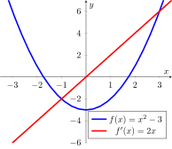
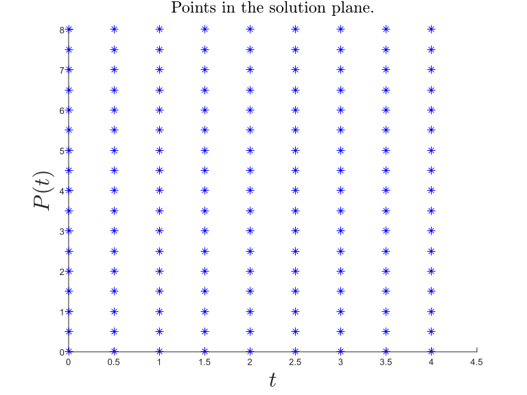
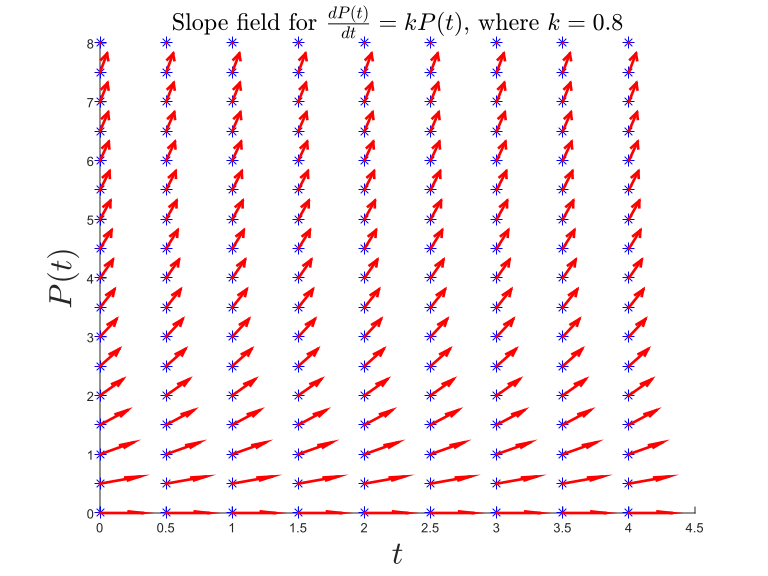
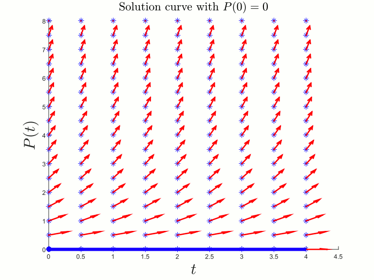

Understanding differential equations is a tall order if you are new to mathematics. We will start simple. We will start with the familiar concepts of mathematical expressions, describe what a mathematical equation is, then we will proceed to define a mathematical function and the concept of derivative of a function. At this point we will define differential equations and graphically see what does it mean to solve a differential equation. Without further ado let us dive into the world of mathematics.
What is an equation?
A sentence in the English language comprises a subject noun, a verb and an object noun, for example, "John plays piano," is a valid sentence with 'John' and 'piano' the nouns and 'plays' the verb. By analogy in mathematics an expression comprise of values (the nouns) and an operator such as plus, minus, multiply or divide (the verb), for example, $2 + 3$ is a valid mathematical expression and so are $10/5$ and $30-4$.
We don't always need to specify the exact names of the nouns in an English sentence, we can use pronouns instead of nouns and so "He plays this," is equivalent to "John plays piano." In this sentence he and him are pronouns, placeholders for the most recent nouns that both the speaker/writer and listner/reader know about. In mathematical expressions the equaivalent concept is called a variable represented with a symbol such as $x$, $y$, $z$ or any other alphabet. A variable $x$ may refer to the number $2$ at one moment and the same $x$ may refer to the value $5$ at a later point, that is why it is called a variable. So assuming that the variable $x$ refers to the value $2$ and variable $y$ refers to $3$, the mathematical statement $2 + 3$ can be equivalently written as $x + y$.
Now that we know mathematical expressions, let's define a mathematical equation. Oxford dictionary defines an equation as:
A statement that the values of two mathematical expressions are equal (indicated by the sign =).
In other words a mathematical equation is a fact, a statement, a preposition that two entities are equal. So $2+4=6$, $4/2=2$, and $6-4=2$ are all mathematical equations. Now let's use variables (pronouns). Let $x$, $y$ and $z$ refer to $2$, $3$ and $5$ respectively and these facts are represented by the mathematical equation $x=2$, $y=4$ and $z=6$. Next, our first mathematical equation $2+4=6$ becomes $x+y=z$, and so on...
In real world we use variables to represent different quantities. As an example, let $m$ represent the amount of money you save per month, $e$ represent your monthly expenditure and $s$ represent your monthly salary, then the fact that your saving is equal to your salary minus your expenditure is represented by the mathematical equation $m=s-e$
What does solving an equation means?
Solving an equation means finding out the value of an unknown variable given some mathematical statements i.e., equations. Let's say we know your salary is \$$3000$ and you have a saving of \$$1000$, then the equation is $1000=3000-e$; solving this equation for $e$ means finding the value of $e$: the monthly expenditure. In this case it is very easy to solve the equation and find out the expenditure $e$ to be \$$2000$. Solving equations: finding the unknown quantities based on all the existing facts, i.e., the given equations, is an important part of real world engineering problems.
What is a function?
Functions are a type of relations between quantities. So, let's start with a mathematical relation between two quantities. Let the first quantity, represented by $x$, be the number of apples you buy and the second quantity, represented by $y$, be the amount you pay at a store, then the following figures illustrate some of the relations between these two quantities.
It may be the case that the more apples you get the more you pay:

Or there may be a "buy one, get one free" sale:

Or the price may depend on the mood of the seller:

Functions are relations between an input quantity and an output quantity, such that each input is related to exactly one output. The first two relations above are functions; however, the third one is not a function since two apples ($x=2$) are related to both $5$ and $10$.
Functions are represnted by equaions of the form $y=f(x)$ where $x$ is assumed to be the input quantity and $y$ the output quantity. So an equation $y=2x+3$ represent a function. Not all equaions, however, represent a function, for example, $y=\pm\sqrt{x}$ do not represent $y$ as a function of $x$ since it relates each $x$ to two $y$s.
What is a derivative?
A derivative is the rate of change of one quantity in terms of another quantity. Roughly speaking, if you are climbing a hill and you climb 10 meters height in one hour, the derivative of your height with respect to time is 10 meters per hour. Derivatives measure the sensitivity, i.e., how much sensitive is your progress as you advance in time.
Let's suppose two quantities $x$ and $y$ are related to each other by a function $y=f(x)$. The derivative of the function $y=f(x)$ is a measure of how much the value of the function $y$ changes when we change the input $x$ to the function $\frac{\textrm{change in } y}{\textrm{change in } x}$. To be precise, derivative measure the instantanuous rate of change, thus the change in $x$ is assumed infinitesimal.
The figure below shows a plot of the function $f(x)=x^2-3$ along with it's derivative $f'(x)=2x$. For $-3\lt x \lt 0$, $f(x)$ is continuously decreasing and thus the derivative of the function is negative in this range. For $0 \lt x \lt 3$, $f(x)$ is continously increasing and thus the derivative of the function is positive and represents the amount of increase in $f(x)$.
One final note on the notation used for derivatives. In the example above the function $f(x)$ is a scalar function of a single variable and we denote the derivative of $f(x)$ with resepect to $x$ as $$ f'(x) = \frac{df(x)}{dx}. $$ The derivative of a function is also a function and thus we can apply the derivative operation to get higher order derivatives. The concept of derivatives is also defined for more complex functions, i.e., vector valued functions of multiple variables. To learn more about these derivatives see Gradient, Jacobian, Hessian, Laplacian and all that
Finally, what is a differential equation?
An equation that contains a derivative is called a differential equation. A differential equation relates a quantity to the derivatives of other quantities. Many important laws of physics that govern our universe are in the form of differential equations, e.g., the Newton's law of motion relates the second derivative of position to force $F=m\frac{d^2x}{dt^2}$.
In science we perform experiments, we observe some phenomenon and then fit a mathematical equation to the observations, called a mathematical model. The mathematical model help us in prediction and analysis of the real world phenomenon. Most often differential equations (equations containing derivatives) turns out to be the models describing the observations. Phenomenon such as motion of bodies (Newton's laws), heat transfer (Fourier's law), propagation of radio waves (Maxwell's laws), population dynamics (Lotka-Volterra equations), stock market dynamics (Black-Scholes model) are all explained by some form of differential equations.
Let us say we want to predict the lion population $P(t)$ in a given area at a given time $t$. After careful observations and using our intuition we come up with a very simple model. We propose that the change in the lion population is proportional to the current population of the lion, i.e, $$\frac{dP(t)}{dt}=kP(t).$$ Where $k$ is a proportionality constant to be determined through observations and we assume that once $k$ is determined it remains constant for all times. This is a very simple and quite naive differential equation for the dynamics, i.e, growth and decay, of the lion population, as the population depends on many more factors than just the current number of lions alive and also the assumption that the reproduction rate $k$ remains constant for all times is also a simplistic one. Nevertheless, this model will help us in understanding differential equations.
What does solving a differential equation means?
Our population model tells us how the derivative of the population $\frac{dP(t)}{dt}$ changes with the current population size; however, it does not give us the population $P(t)$ at any given time. Solving a differential means finding a function $P(t)$ such that its derivative is given by $kP(t).$ To graphically visualize the solution to the differential equation consider points in the $t$-$P(t)$ solution plane.

The first derivative of a curve gives us the slope of the curve and since the differential equation gives us the first derivative of the solution $P(t)$, we can draw the slope lines to the solution curve at points in the solution space as shown below. At each point a slope of $\frac{dP(t)}{dt}=0$ is drawn as a horizontal line, $\frac{dP(t)}{dt}=\pm1$ are drawn as diagonal lines, and a slope of $\inf$ is drawn as a vertical line and so on...

Our solution to the differential equation must satisfy these slopes, i.e., at each point in the solution space the red slope lines must be tangent to the solution curve. It turns out that there are many functions that satisfy this requirement.
In order to choose a specific function as a solution we need to impose further restrictions on the solution function $P(t)$ such as the solution must take a certain value $P(t)=P_0$ at $t=0$. This restriction on the solution function is known as an initial-value problem. The figure below shows the solution curves for different initial values of the function $P(t).$

Did you like this article? Do you have suggestions for improvement? Let me know!